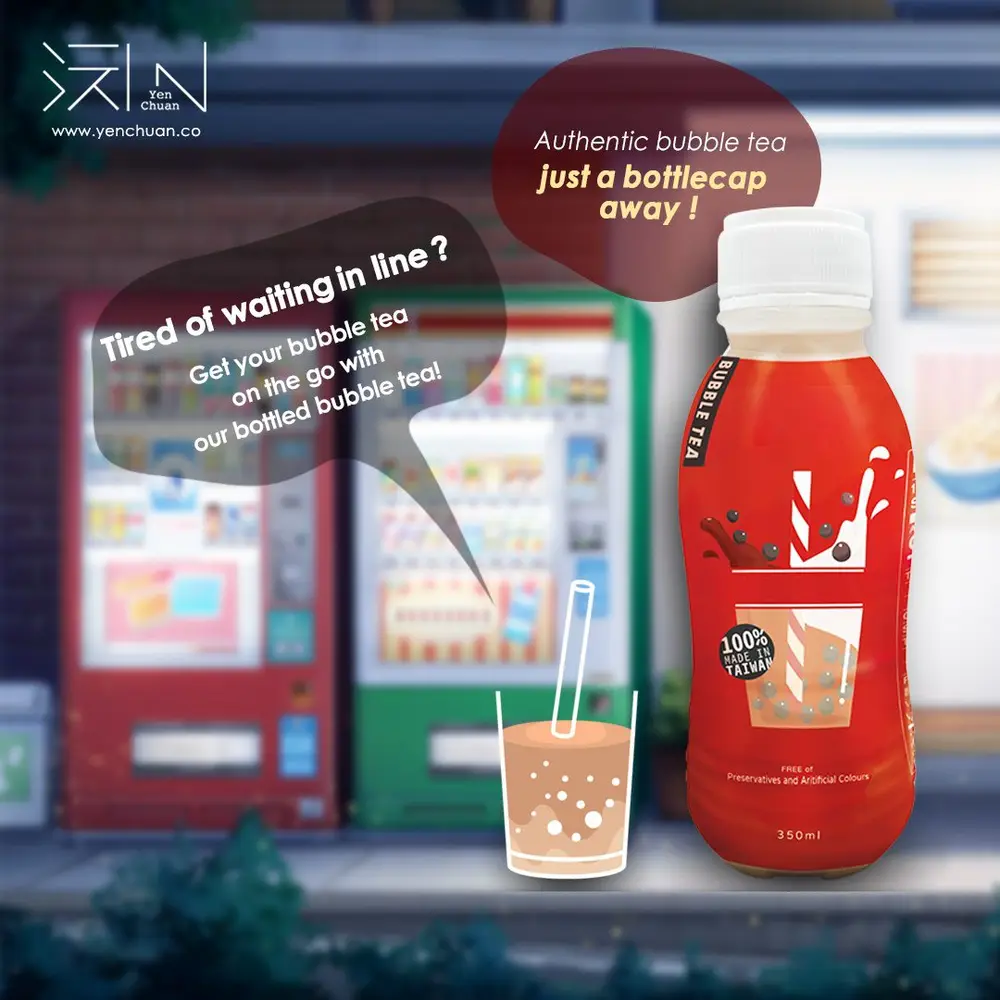
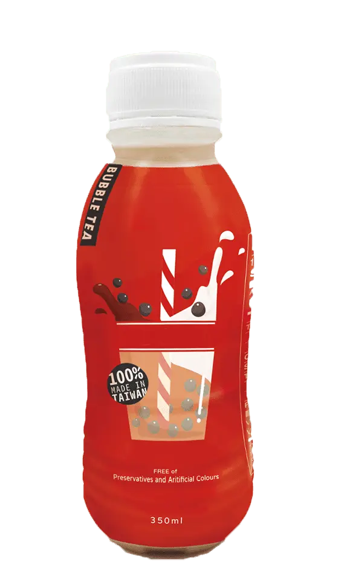

Articles / Tips & trends
Bring bottled bubble tea on the go!
2021-05-31 · New products, News

There’s nothing more refreshing than a cup of iced bubble tea in a hot summer day, with crystal-clear ice cubes clinking in sweet, colourful drinks. It’s not uncommon to see long lines snaking outside popular bubble tea shops, as people wait under the burning sun just for a cup of refreshing bubble tea.
Everything changed when the coronavirus struck. Streets were cleared, shops were shuttered, and people hunkered down in their homes as cities entered lockdown one by one. However, the thirst for bubble tea still runs strong.
Many bubble tea shops offer take-out services for their menus, but perhaps you don’t have the means to do so. Either there’s not enough manpower, or you couldn’t afford partnering with online takeaway services.
Even if you do offer take-out, there’s only so far you can deliver. Go outside your local area and it’s no can do.
What could you do? What if it’s possible to buy your bubble tea from a convenience store, or from a supermarket?

Say hello to our bottled bubble milk tea!
Don’t get this confused with the run-of-the-mill bottled milk tea – as the name suggests, our bottled bubble tea contains actual boba!
Regular tapioca pearls cannot be used in bottled drinks, since they cannot keep their texture during the bottling process – leave them in liquids for too long and they turn into a soggy mess.
Say goodbye to those worries! Our specialized boba pearls are designed to withstand the bottling process, and can stay bouncy and chewy.
We also flavour the boba with brown sugar, for the true Taiwanese bubble tea experience!
Want to sell bottled versions of your own bubble tea? No problem – we can customize the drinks for you! Just tell us what you want in your drink, and we will tailor-make your formula for you.
All the goodness of bubble tea, in one handy bottle!
Want to give it a try?